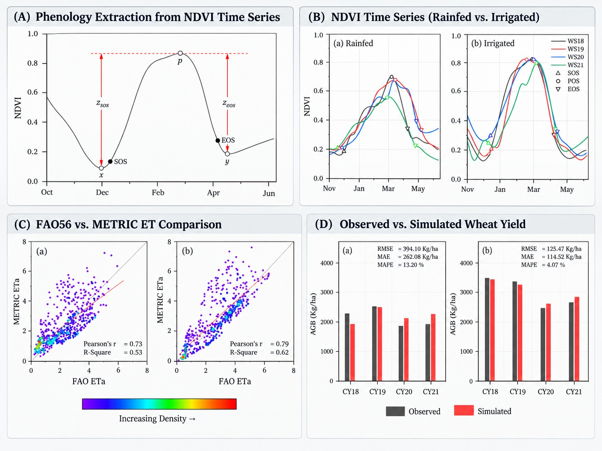
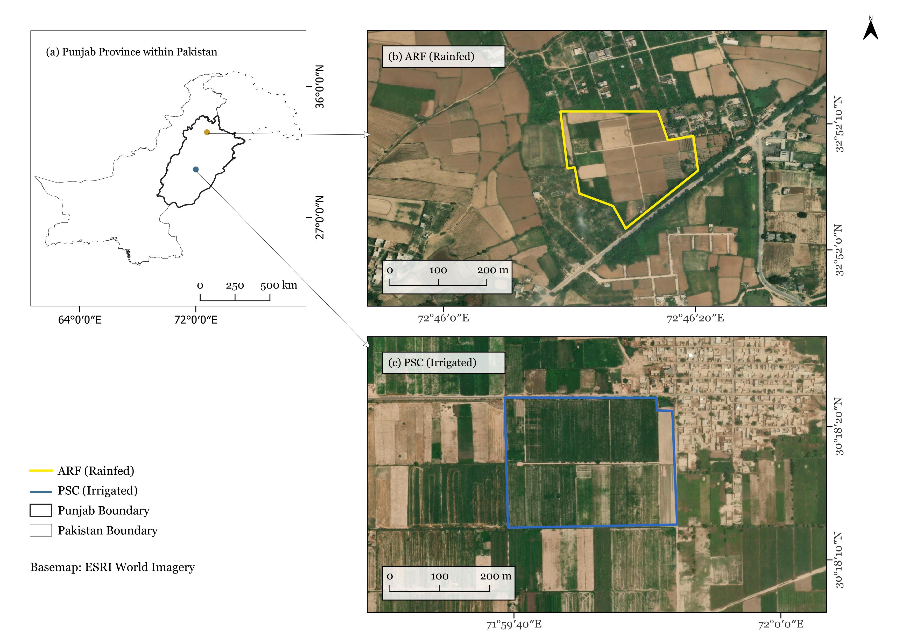
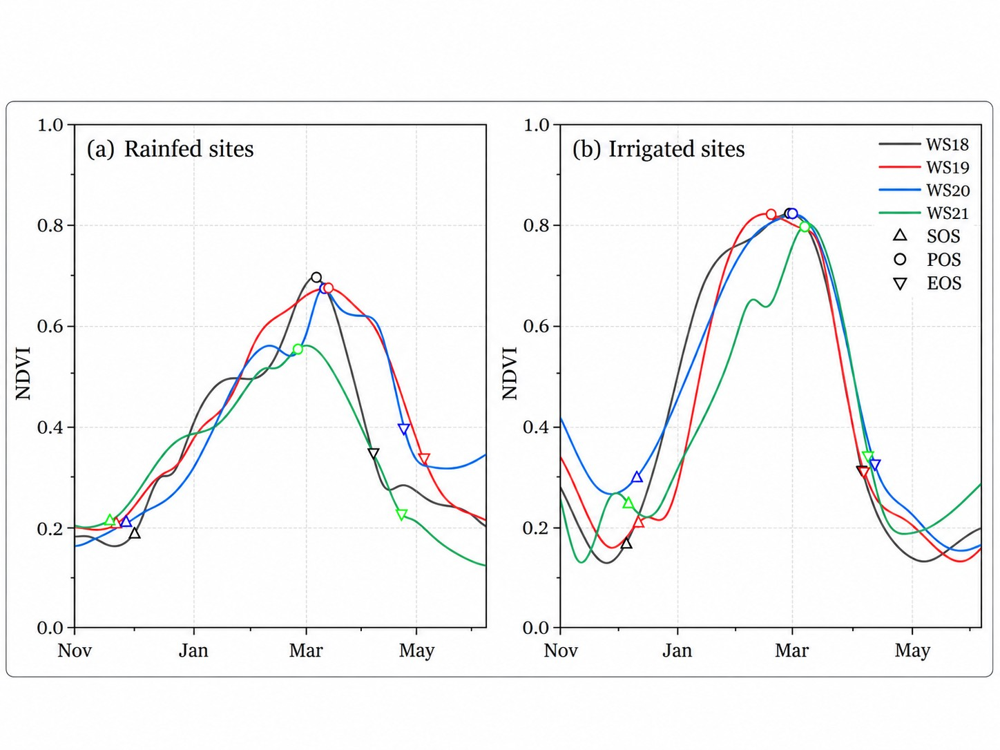
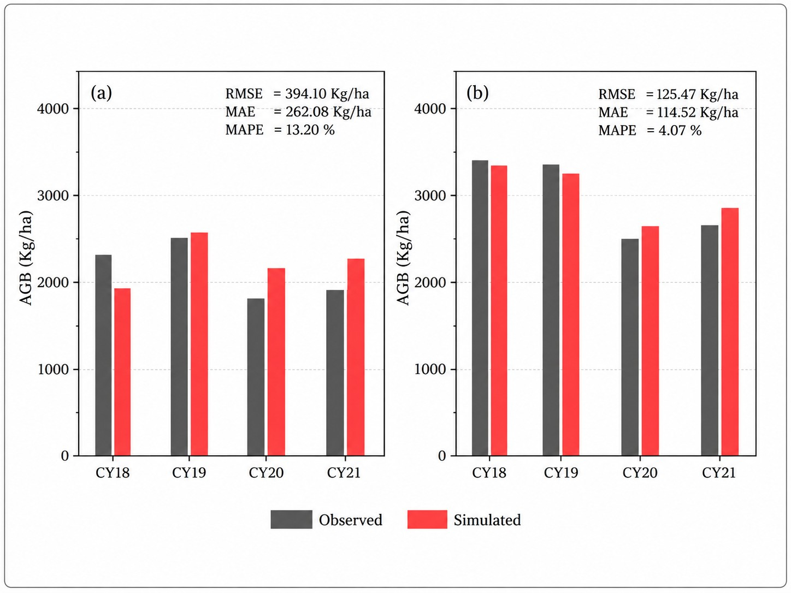

Landsat & EEFlux
Vegetation dynamics and satellite evapotranspiration products.

Integrating satellite-derived crop state and water-use observations with a process-based crop model for wheat biomass and yield estimation in data-limited environments.
Crop-yield estimation becomes particularly difficult in data-scarce environments where field observations, management records, and even basic phenological information such as sowing and harvest dates may be limited or unavailable. Building on the METRIC–CropSyst framework proposed by Khan et al. (2019), my MSc research evaluated its applicability for wheat production in Pakistan under rainfed and irrigated conditions. The work focused on adapting key model parameters to local conditions and deriving seasonal phenology dynamically from Landsat NDVI time series so that the framework could operate with minimal field information.
To what extent can routinely available satellite observations of crop state and water use support process-based wheat yield estimation in data-scarce agricultural environments?

The workflow linked remotely sensed canopy state, evapotranspiration and phenology with crop-growth and water-use algorithms derived from CropSyst. Landsat NDVI observations were interpolated using cubic spline to a daily time step to estimate leaf area index (LAI) and derive start, peak and end of season (SOS, POS and EOS). EEFlux evapotranspiration fraction (ETrF) was similarly interpolated and combined with daily reference evapotranspiration to estimate actual evapotranspiration (ETa). LAI was then used to partition ETa into soil evaporation and crop transpiration, following the METRIC–CropSyst approach. Crop transpiration was converted to above-ground biomass using a transpiration-use-efficiency formulation (Stöckle et al., 2008) and grain yield was later estimated from biomass using a curvilinear harvest-index relationship (Kemanian et al., 2007).
Vegetation dynamics and satellite evapotranspiration products.
Satellite-based estimation of canopy development and seasonal timing, including SOS, POS and EOS.
EEFlux ETrF combined with daily reference evapotranspiration.
Forced assimilation of satellite-derived LAI, ETa and phenology into a simplified CropSyst growth framework.
Curvilinear harvest-index relationship for grain yield estimation.
Satellite-derived NDVI time series captured the seasonal development of wheat at both rainfed and irrigated sites, and the estimated seasonality parameters (SOS, POS and EOS) agreed well with established regional crop calendars and literature across the four growing seasons. Yield estimates from the METRIC–CropSyst framework showed stronger agreement with observations at the irrigated site than at the rainfed site. At the rainfed site, RMSE, MAE and MAPE were 394.10 kg ha⁻¹, 262.08 kg ha⁻¹ and 13.20%, respectively. At the irrigated site, the corresponding errors were 125.47 kg ha⁻¹, 114.52 kg ha⁻¹ and 4.07%.


The framework performed more consistently at the irrigated site than at the rainfed site. The larger errors under rainfed conditions may partly reflect the relatively small field sizes compared with the native spatial resolution of the Landsat thermal observations used by METRIC. At approximately 100m native resolution for Landsat-8 thermal data, individual pixels may include signals from adjacent fields with different crops or management conditions, which can influence satellite-derived evapotranspiration estimates.
The main contribution of this work was the application and adaptation of the METRIC–CropSyst framework to a data-scarce agricultural setting in Pakistan. Model parameters were adjusted for local wheat conditions, while a dynamic phenology workflow was introduced to derive SOS, POS and EOS directly from Landsat NDVI time series. This reduced reliance on field-recorded sowing, peak-growth and harvest information, which is often unavailable or inconsistent in the study environment.